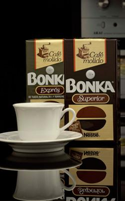

Bonka
Por último tenemos la marca Bonka. Se trata de una de las marcas de café creada por Nestlé sobre el 1979, y está totalmente orientada al mercado de cafés para cafeteras convencionales. Ofrecen tanto café molido como en grano, y el principal uso que se le da es para las máquinas espresso.
La gama de productos es bastante reducida, pues se centran principalmente en el café puro, nada de mezclas con otros productos para intentar conseguir tipos de café distintos como el capuccino, cortados, etc. Se dividen en dos grupos principalmente, la gama de cafés molidos, y cafés en grano.
- Molidos
- Natural
- Mezcla
- Puro
- Café torrefacto
- Normal
- Descafeinados